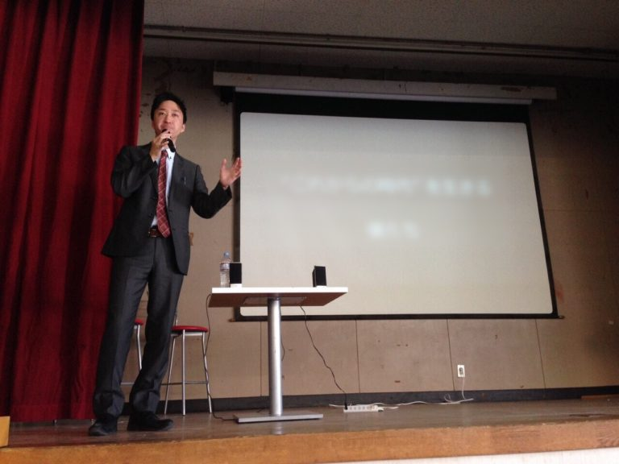

プログラミングで
人生の安定を手にいれよう

バンコクのノマドエンジニア育成講座
iSara[イサラ]
まずは２０日間で、
月１０万円稼げるスキルを手にいれよう。
※受講料金は実質０円です。詳しくは資料請求をどうぞ。
第４期生：2018年12月３日 ~ 2018年12月22日 ＊締め切りました
第５期生：2019年４月8日 ~ 2019年4月27日 ＊締め切りました
第６期生：資料請求受付中です
エンジニアとして本当の自由を手に入れるためには？
エンジニア需要の高まりに伴い、プログラミングスクールが増えています。
しかしそこでの学習の先は、 提携して決められた就職先に就職すること。
これで本当にいいのですか？
日本人エンジニアはアメリカと較べて給料が格段に低い。
その理由がここにあり、 エンジニアは自分の給料をコントロールすべきなのです。
スキルを身につけたエンジニアは、人生をコントロールすることでより自由に。
そこで必要なのが「稼ぐ力」です。
ABOUT
ノマドエンジニア育成講座
iSara[イサラ]とは
「 稼ぐこと 」にフォーカスしたWebエンジニア育成講座です。
稼げるエンジニアに必要な５つのスキルとは？
基礎的な
プログラミングスキル
案件獲得に必要な
営業力
見積もり作成から
納品までの知識
自分の付加価値を
高めるスキル
フリーランス同士の
横のつながり
iSaraで「基本的なプログラミングスキル」は教えません
基礎的なプログラミングスキルは無料で学べる時代。
iSaraでは、基礎知識学習は事前課題とチャットサポートのみ。
STEP.1
【バンコク渡航前１ヶ月】
事前課題で基礎知識を学ぶ
STEP.2
【バンコク到着後】
実践的に稼ぐことに特化した学習
STEP.3
【バンコク帰国後】
講座実施後の案件獲得サポート
スキルアップしてもフリーランスエンジニアとして食べていくことは難しい。
フリーランスにはプログラミングスキル以外が大切。
iSara[イサラ]で学べること
iSaraの学習では、エンジニアとして「稼ぐ」ために必要な能力を身につけます。
これらを教えるのがiSaraです。
他のプログラミングスクールとここが違う！
iSara[イサラ]の３つのメリット
現役フリーランスから学べる
他のプログラミングスクールとは違い、実際にフリーランスとして活動しているエンジニアが直接講師を勤めます。
実践を通じて学べる
フリーランスにとって最短の学習方法は「実践」。iSaraでは実案件を通して学びます。現役フリーランサーの案件サポートに加え、クラウドソーシングを活用。初心者の自分じゃ無理と思うかもですが、現役フリーランスがサポートしますので大丈夫。
授業料が実質０円
講座費用248,000円以上の金額が稼げるまで「永久サポート延長」があります。
さらに！帰国後もサポート付き
リモートワーカーのチームを作ることで受注率、受注単価が大幅に向上します。
iSaraは講座が終わって終了ではありません。
参加メンバーのチャットグループを作り、帰国後も継続的に案件参加できるようになります。
また、チームで働くことで継続的に稼ぎやすい仕組みづくりも構築しております。
事前課題ができない人はお断りしております。iSaraでは、無料で学べるプログラミング基礎知識は教えません。事前課題一覧はメールで送りつつ、
チャットサポートのみ。従って、本気で取り組まないと結果は出ません。
創業メンバー
実際にフリーランスとして活躍しているエンジニアが立ち上げました
フリーランス講師
染谷 佳佑
ISARA (THAILAND) CO.,LTD.の
代表です。学生起業の後にリクルー
トへ就職、その後独立し
、海外移住
しました。今はフリーランスとして
リモートワークで日本円を稼ぎ、外
国通貨に変
えて使い、海外を旅して
ます。営業、ブログPVアップ(最高
月間150万PV)、ビジネス構築が専
門です。
フリーランス講師
成田 雄輝
バンコクのシェアハウスのオーナーをや
りながら一年の大半をタイで過ごしてい
ます。 大学
時代から今に至るまでネット
だけで生計を立てているので、自由歴だ
けは講師陣の中で最長で
す！ 母親がタイ
人という事もありタイには精通してます
ので、こちらでの生活のサポートは
お任
せください！
フリーランスエンジニア
大滝 昇平
月の半分は東京の会社にリモートで
勤めつつ、フリーでも活動している
ノマドWebディレクター兼エンジニ
アです。Laravel・WordPressでの
Web制作がコアスキル。会社員とフ
リーランス、２つの顔があるからこ
そ、両方の側面からお話できるかと
思います。宜しくお願いします！
フリーランスエンジニア
坂内 学
アドバイザーとして参画しました。
新卒で海外就職して１１ヶ月後に退
職。今は日本にいたり海外にいたり
でゆるくフリーランスをしていま
す。
お仕事はWebマーケティングとプロ
グラミングが専門領域です
Q&A
ノマドエンジニアとして自由に稼ぐことは
「 本当に 」可能なのか？
実現可能です
その証拠に第三者の声を聞いてみました。
＊実際にフリーランスエンジニアを採用する企業様から、メッセージをいただきました。

リモートワークという言葉がありますが、弊社では何も
気にしません。エンジニアに求めるのは、快適なコミュ
ニケーションと信頼と成果物のみ。
Kredo IT Abroad . Inc 代表取締役 横田 猛夫

社内でスキルのある人材を採用するのは難しい。外部パ
ートナーとして継続的に依頼できるフリーランスには助
かっています。
SAPEUR . Inc 代表取締役 佐藤 陽

プログラマーが足りていないときに外部リソースとし
て、フリーランスに発注しています。今はどこの会社で
もエンジニアが不足していますね。
株式会社BeautifulWorks 代表取締役 淺田 百合
iSara[イサラ]で学べる内容
渡航前の事前課題と渡航中に学べることの一覧です。
講座費用248,000円以上の金額が稼げるまで「永久サポート延長」します。
つまりリスク０で参加できます。
受講の流れ


Skypeで
事前コンサル
現在のスキルの状況、パソコンの環境説明、渡航での注意点を話します。
簡単なテストあり
iSaraでは受講料を稼げることを保障しています。従って、事前コンサル時点で簡単なテストを実施し、
場合によってはお断りをしております。（テストの内容はPCの基礎知識に関するテストですので、普段からパソコンを利用する方でしたら問題ありません。テストはもちろん無料ですので、まずはお問い合わせください。）


事前課題の提出
出発前の１ヶ月前に事前課題を送ります。
０から始めるプログラミング事前学習講座、環境構築の事前学習、jQueryの事前学習講座、Bootstrapの事前学習講座、PHP
/ Mysqlの事前講座
課題は多いですが、ここで努力が必須です。プログラミングは高付加価値なスキルです。そのためには学習が必須
です。回数無制限のチャットサポート付きですので、最初は努力してください。

現地に渡航
到着日には空港でお出迎えし、初日のオリエンテーションを行います。
滞在先は空港からすぐの出来たてシェアハウス。美味しいタイ料理などもご紹介します。
iSaraは『ノマド』フリーランス養成講座です。
楽しいノマド体験ができるよう、バンコクでの生活はこちらでサポートします。

実案件を通して学ぶ
現役フリーランスが抱える案件に加え、クラウドソーシングを使って実案件をこなします。
案件獲得のためのメールの書き方や見積りの仕方など、
他のプログラミングスクールでは教えてくれない実務スキルを学ぶことができます。
＊現役フリーランスがサポートします。


帰国後の仕事獲得
サポート付き
経験年数の少ないフリーランスが高単価で継続的に仕事受注するコツ、それがチームを組むことです。
iSaraではフリーランスコミュニティを形成し、帰国後のエンジニアでも継続的に稼げる仕組みを提供します。
もちろん、個人で十分に稼げるようになった場合はいつでも脱退できますし、制限などは何もありません。
なぜバンコクなのか？
ここまで見ると、iSaraは日本でも実施可能に見えます。
しかし、バンコクを選んだのには理由があります
・プログラミングフリーランスの最先端
・水準は日本と同じなのに、生活費が安い（毎月８万円ほど）
・昼、夜共に遊びが充実（稼ぐモチベーションアップと息抜きにGOOD）
・日本人が住みやすい（食事が美味しい / 気候が良い / 親日である）
環境が大切。さらにこの価格が実現できるのが、バンコクなのです。
iSara受講生への参加特典
講座費用248,000円以上の金額が稼げるまでの「永久サポート延長」
を追加します。つまり、実質０円です。
iSaraは『実質０円』！更なる特典もあります。
特典１
講座費用248,000円以上の金
額が稼げるまで、「永久サポー
ト延長」。リスク
０で参加でき
ます。
特典２
iSaraフリーランスコミュニテ
ィ参加権利。案件の紹介や、新
施設OPENの際の
優先利用権が
受けられます。
特典３
講座参加後のシェアハウス利用
権利（ドンムアン空港至近のた
め、とても便利です）
iSaraはボランティアではありません
ここまでみると、実質０円で各種サポートもある、特典が多すぎて逆に怪しい。
そう思われるかもしれません。
しかし、iSaraが目指すことは異なります。
月１０万円稼げるエンジニアを輩出し続ける。
最大の価値がこれです。
iSaraの卒業生が稼ぎ続けることで、小さな経済が動き始めます。
ここに最大の価値があり、この講座はその序章にすぎません。
創業者からのメッセージ
「一生もののスキル」を身につけ、ノマドライフを楽しもう！

初めまして。「iSara（イサラ）」創業者の染谷佳佑と申します。
iSaraの開講は、僕達講師陣にとってもとても大きな挑戦です。今回、参加者に圧倒的な価値提供をするために、超少人数制だからできる内容を用意しました。
・「Webエンジニアとして稼ぐ」に特化した超実践的カリキュラム
・フリーランスとして生計を立て、いつでも世界中を旅できるスキル、収入のある講師陣のみを厳選
・講座参加者が24万8,000円の参加費以上を稼ぐまでの無期限サポート延長
ここまでのカリキュラムを備えた講座は、世界で唯一iSaraだけでしょう。 iSaraでプログラミングや営業を学ぶことで、「一生ものの潰しが効くスキル」が身につきます。 もちろん勉強だけでなく、バンコクを楽しめるプログラムも用意しています！
３ヶ月間徹底的にサポートします。ぜひバンコクでお会いしましょう。
 バンコクのノマドエンジニア育成講座
バンコクのノマドエンジニア育成講座